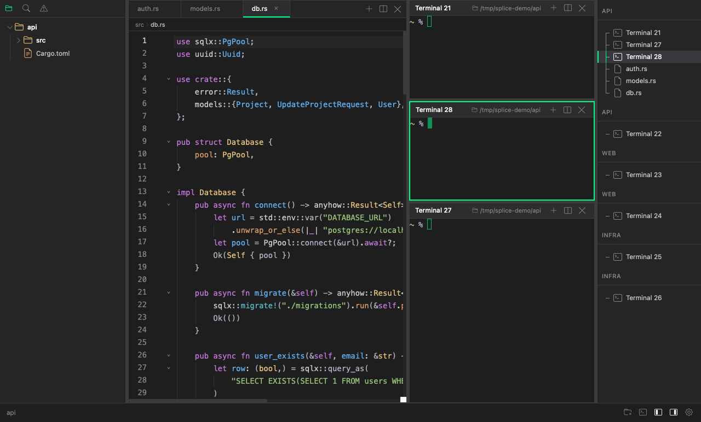

Free & open source · macOS
Keep all your work in motion at once. Splice gives each project its own fully isolated workspace — terminals running, files open, layout intact. Switch in a keystroke. Pick up exactly where you left off.

∞
Projects per window
Zero
Context switch cost
No Electron
Rust backend, system WebView
Always on
Terminals keep running
The workspace
Most editors give you one context. You juggle windows, fight for screen space, and lose your train of thought. Splice gives you workspaces — each one a fully isolated environment with its own project folder, terminals, open files, and layout.
Frontend in one workspace, backend in another. Client A and client B. A long-running build in one terminal while you write code in another. Everything lives in one window — organized, not crammed.
Switch workspaces in a keystroke. The state you left is exactly where you left it.
Full isolation
Every workspace has its own project folder, file tree, open files, terminals, and layout. Nothing bleeds between them.
Instant switch
Jump between workspaces with a keyboard shortcut. Your terminals keep running. Your editors hold their state. No reload, no lost context.
Your layout, your way
Split terminals and editors side by side, any way you want. Resize with a drag. Zoom any pane full screen with a keystroke. Each workspace remembers its own arrangement.
AI-native workflows
Splice is built for the way AI-assisted development actually works. Spin up Claude Code across multiple terminals and projects, then stay focused on your own work. When an agent needs a decision or hits a permission prompt, Splice surfaces it — immediately, clearly, and without breaking your flow.
Works with Claude Code and OpenAI Codex out of the box. No configuration required — Splice detects agent activity automatically and gets out of the way when nothing needs your attention.
Features
Terminal
Fast. Really fast.
A terminal that feels as fast as it looks. Renders at up to 120fps, handles 10,000 lines of scrollback, and speaks the full colour language your shell, editors, and build tools expect. Includes in-terminal search with live match count and prev/next navigation.
Flexible layouts
Split anything, anywhere.
Split any pane into a terminal or editor, horizontally or vertically. Drag to resize. Zoom any pane to full screen with a single keystroke, then back. Navigate between panes without ever touching the mouse.
Code editor
Right beside your terminal.
A full-featured editor without the IDE weight. Syntax highlighting for the languages you actually use, a minimap, bracket matching, and breadcrumb navigation. Drag tabs between panes or drop one to an edge to create a new split. Image and Markdown preview built in.
File explorer
Scoped to your project.
Each workspace opens its own project folder. The file tree stays in sync automatically as files change on disk. Single-click to preview, double-click to keep. The explorer belongs to the workspace — not a shared global panel.
Session restore
Pick up where you left off.
Relaunch Splice and everything is exactly as you left it. Workspaces, pane layouts, open files, terminal directories — all restored automatically. No manual setup, no lost context.
Command palette
Keyboard-first, always.
Every action is one shortcut away. New terminal, new file, split pane, open folder, switch workspace — all reachable without navigating menus or lifting your hands from the keyboard.
Why Splice
Splice is built on Tauri — a Rust-powered desktop framework that uses your system's built-in WebView instead of bundling a copy of Chromium. The heavy lifting happens in Rust: terminal sessions, file watching, workspace state, and agent tracking. The result is an app that starts fast, runs lean, and carries none of Electron's overhead.
Built in Rust
The backend that powers your terminals, file system, and workspace state is written in Rust. No garbage collection pauses, no memory leaks, no "it's an Electron app" excuses.
Snakebite terminal
Snakebite renders directly to a canvas — no DOM elements per character, no layout thrashing. It stays smooth at 120fps even when your build output is flooding the screen.
Lean frontend
The UI is built with fine-grained reactivity — only the components that need to update do. No full-page re-renders, no jank, no stutter when switching between panes.
Smart editor
Editor panes are powered by a battle-tested, extensible core. Syntax highlighting, LSP-ready, minimal footprint. The right amount of editor — not an IDE you have to fight with.
Download
Build from source
# Prerequisites: Node.js 18+, Rust stable, Tauri CLI
git clone https://github.com/adrian-kimbrell/splice
npm install
cargo tauri dev
Production build
Platform
macOS. Linux and Windows support planned.
License
MIT. Free to use, fork, and modify.
Source
github.com/adrian-kimbrell/splice